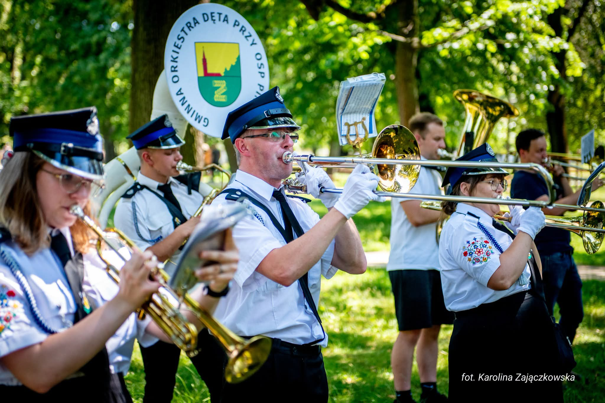
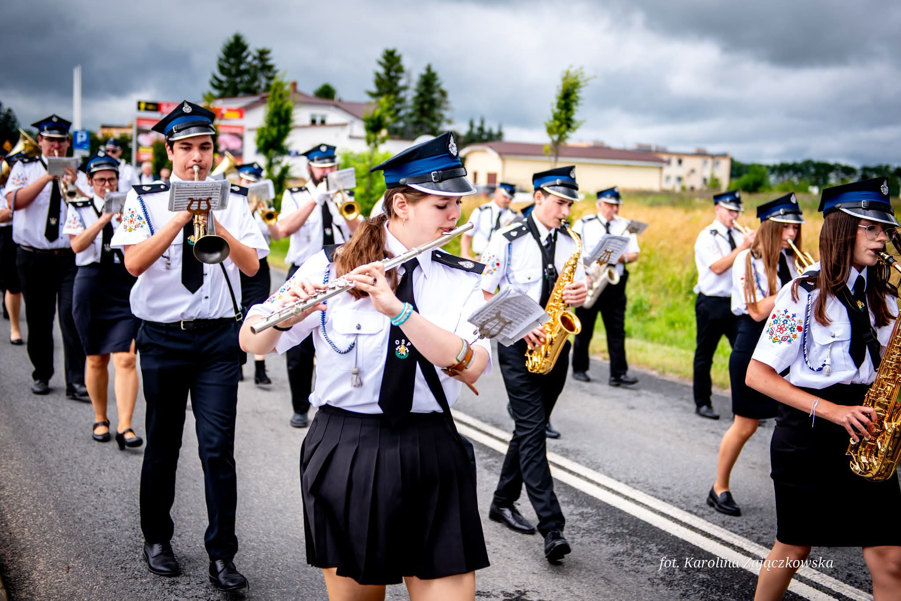
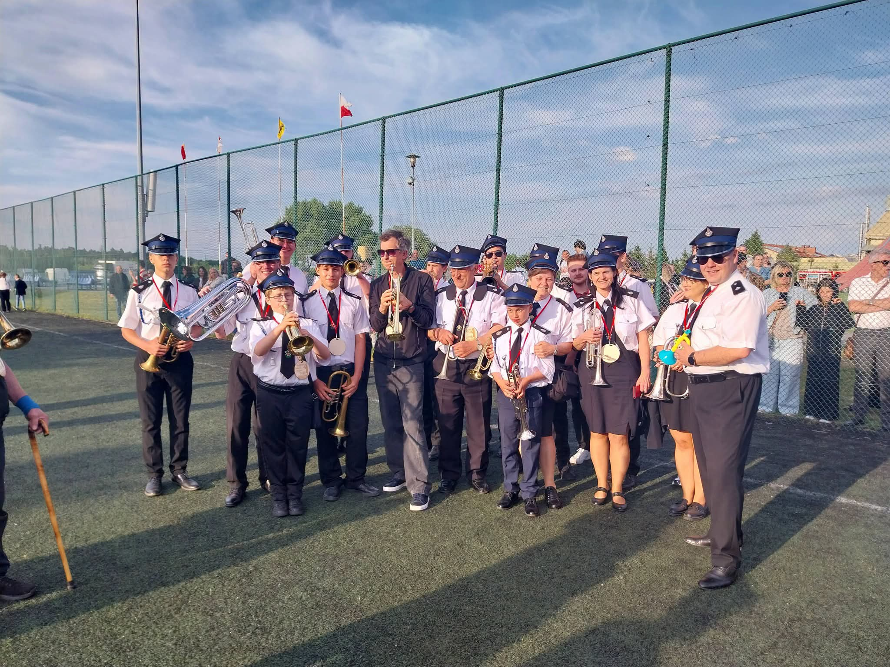
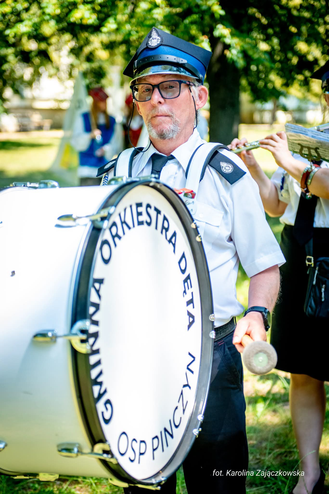
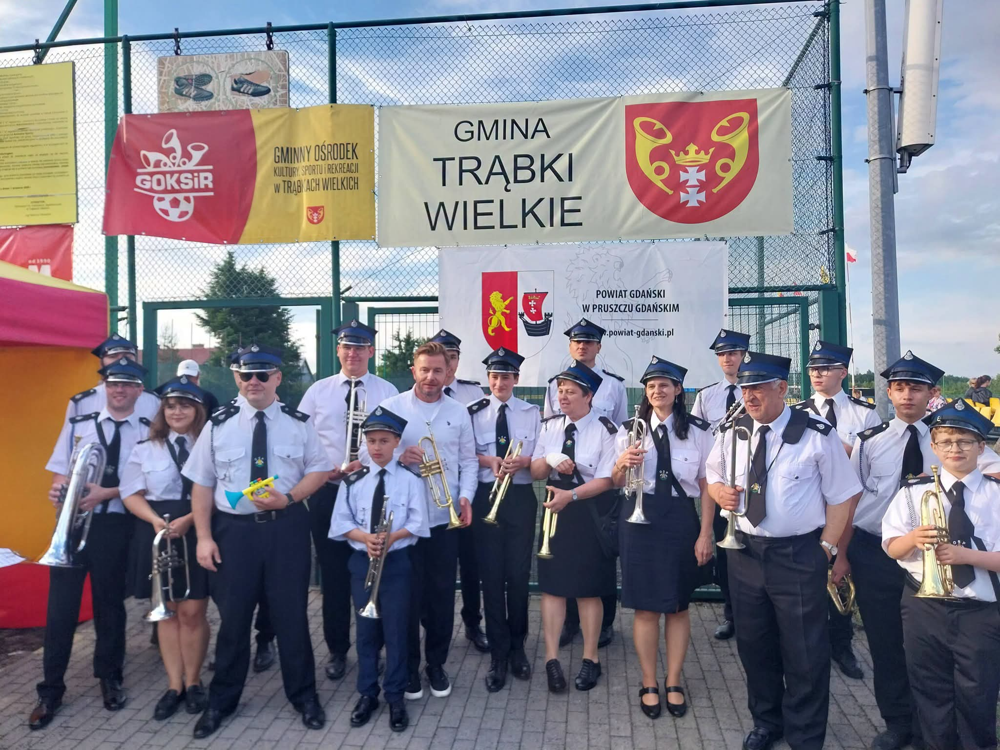
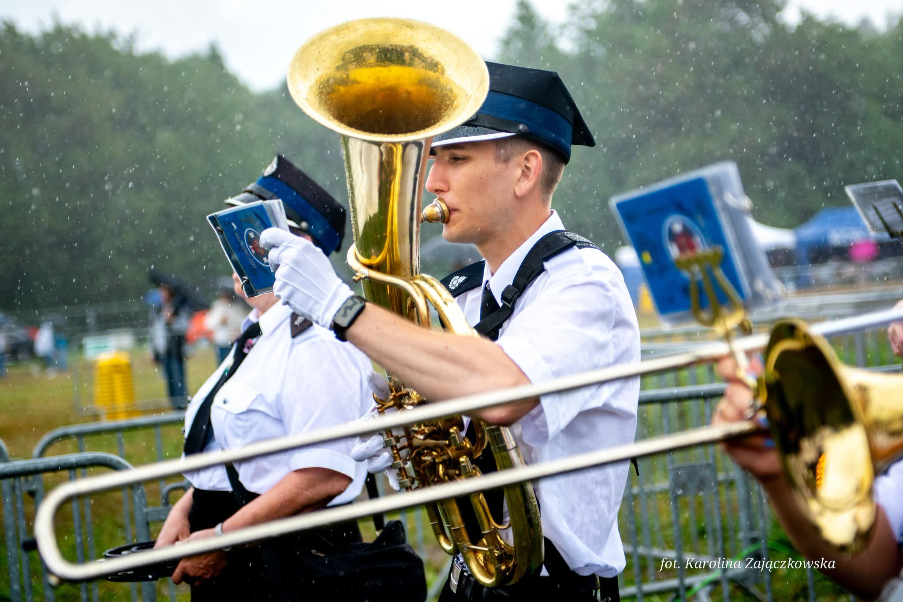
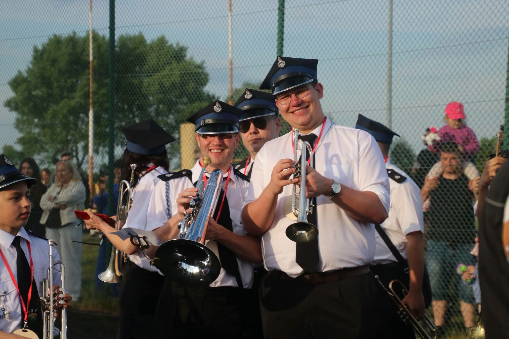
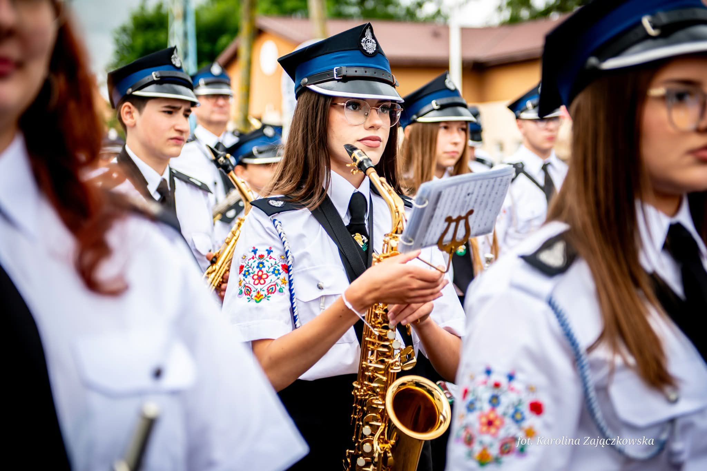
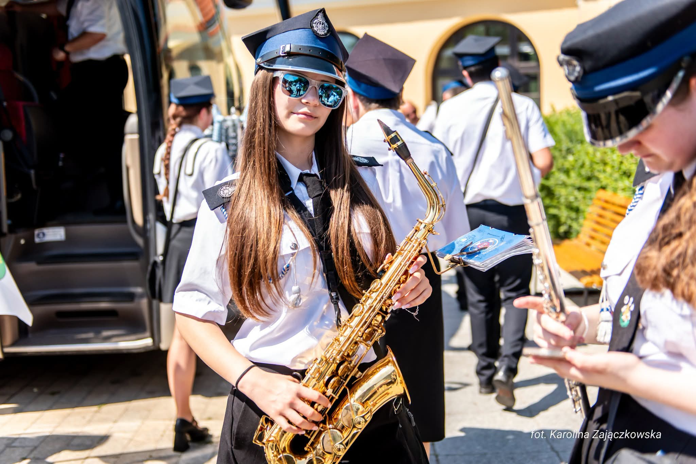

Koncerty, festyny, śluby i uroczystości — chwile, w których gra nasza orkiestra.
Kliknij zdjęcie, aby powiększyć. Filtruj według rodzaju wydarzenia.

Koncert w parku
Przemarsz ulicą
Zespół na festynie
Wielki bęben
Przegląd — Trąbki Wielkie
Tuba w deszczu
Festyn wieczorem
Saksofon w szeregu
Wyjazd na występChętnie umieścimy je w galerii. Prześlij fotografie mailem lub przez Facebooka — razem zbudujemy muzyczną kronikę orkiestry.